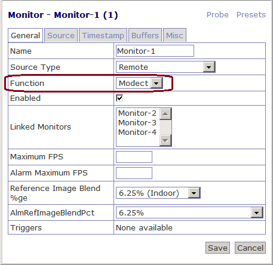

Когда добавляется новый монитор в ZoneMinder, необходимо выбрать тип создаваемого монитора, а другими словами - задать его функциональное назначение (опция Function).

Можно выбрать следующие режимы:
В версии 1.28.x появился еще один режим - Nodect. В документации про него написано следующее:
No DEteCTtion. This is a special mode designed to be used with external triggers. In Nodect no motion detection takes place but events are recorded if external triggers require it.
Вольный перевод следующий:
Этот специальный режим предназначен для использования с внешними триггерами. В Nodect обнаружения движения не происходит, но запись события срабатывает по сигналам от внешних триггеров.